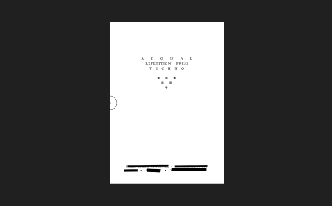

issue 01
release 01

dropping when it's ready
repetition press presents issue one
“atonal”
printing presses and techno share a lot, repeating mechanical like patterns, a fascination with breaking boundaries, beauty in early industrialisation.
this is an opportunity to make a connection.